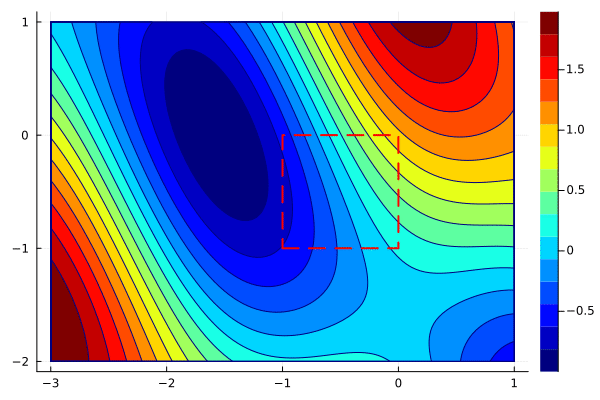

Constrained optimization
The usual formulation of constrained optimization is
\[\tag{P} \begin{aligned} \text{minimize}\qquad &f(x) \\ \text{subject to}\qquad &g_i(x) \le 0,\ i=1,\dots,I, \\ &h_j(x) = 0,\ j=1,\dots,J. \end{aligned}\]
Functions $g_i$ generate inequality constraints, while functions $h_j$ generate equality constraints. Box constraints such as $x\in[0,1]$ are the simplest case of the former. This optimization problem is also called the primal formulation. It is closely connected with the Lagrangian
\[L(x;\lambda,\mu) = f(x) + \sum_{i=1}^I \lambda_i g_i(x) + \sum_{j=1}^J \mu_j h_j(x).\]
Namely, it is simple to show that the primal formulation (P) is equivalent to
\[\operatorname*{minimize}_x\quad \operatorname*{maximize}_{\lambda\ge 0,\mu}\quad L(x;\lambda,\mu).\]
The dual problem then switches the minimization and maximization to arrive at
\[\tag{D} \operatorname*{maximize}_{\lambda\ge 0,\mu} \quad\operatorname*{minimize}_x\quad L(x;\lambda,\mu).\]
Even though the primal and dual formulations are not generally equivalent, they are often used interchangeably.
The linear program
\[\begin{aligned} \text{minimize}\qquad &c^\top x \\ \text{subject to}\qquad &Ax=b, \\ &x\ge 0 \end{aligned}\]
is equivalent to
\[\begin{aligned} \text{maximize}\qquad &b^\top \mu \\ \text{subject to}\qquad &A^\top \mu\le c. \end{aligned}\]
We can observe several things:
- Primal and dual problems switch minimization and maximization.
- Primal and dual problems switch variables and constraints.
For the unconstrained optimization, we showed that each local minimum satisfies the optimality condition $\nabla f(x)=0$. This condition does not have to hold for constrained optimization, where the optimality conditions are of a more complex form.
Let $f$, $g_i$ and $h_j$ be differentiable function and let a constraint qualification hold. If $x$ is a local minimum of the primal problem (P), then there are $\lambda\ge 0$ and $\mu$ such that
\[ \begin{aligned} &\text{Optimality:} && \nabla_x L(x;\lambda,\mu) = 0, \\ &\text{Feasibility:} && \nabla_\lambda L(x;\lambda,\mu)\le 0,\ \nabla_\mu L(x;\lambda,\mu) = 0, \\ &\text{Complementarity:} && \lambda^\top g(x) = 0. \end{aligned}\]
If $f$ and $g$ are convex and $h$ is linear, then every stationary point is a global minimum of (P).
When there are no constraints, the Lagrangian $L$ reduces to the objective $f$, and the optimality conditions are equivalent. Therefore, the optimality conditions for constrained optimization generalize those for unconstrained optimization.
Numerical method
We present only the simplest method for constraint optimization. Projected gradients
\[\begin{aligned} y^{k+1} &= x^k - \alpha^k\nabla f(x^k), \\ x^{k+1} &= P_X(y^{k+1}) \end{aligned}\]
compute the gradient as for standard gradient descent, and then project the point onto the feasible set. Since the projection needs to be simple to calculate, projected gradients are used for simple $X$ such as boxes or balls.
We will use projected gradients to solve
\[\begin{aligned} \text{minimize}\qquad &\sin(x_1 + x_2) + \cos(x_1)^2 \\ \text{subject to}\qquad &x_1, x_2\in [-1,1]. \end{aligned}\]
The implementation of projected gradients is the same as gradient descent but it needs projection function P as input. For reasons of plotting, it returns both $x$ and $y$.
function optim(f, g, P, x, α; max_iter=100)
xs = zeros(length(x), max_iter+1)
ys = zeros(length(x), max_iter)
xs[:,1] = x
for i in 1:max_iter
ys[:,i] = xs[:,i] - α*g(xs[:,i])
xs[:,i+1] = P(ys[:,i])
end
return xs, ys
endThe projection function P computes the projection on [x_min, x_max]. Since it is a box, the projection is computed componentwise:
P(x, x_min, x_max) = min.(max.(x, x_min), x_max)Now we can call projected gradients from the same starting point as before.
x_min = [-1; -1]
x_max = [0; 0]
xs, ys = optim(f, g, x -> P(x,x_min,x_max), [0;-1], 0.1)We use the keyword arguments xbounds and ybounds to plot the feasible region in the animation. First, we plot only the iterations xs.
xlims = (-3, 1)
ylims = (-2, 1)
create_anim(f, xs, xlims, ylims, "anim6.gif";
xbounds=(x_min[1], x_max[1]),
ybounds=(x_min[2], x_max[2]),
)To plot the path, we need to merge them by following one point from xs by a point from ys and so on. Since xs and ys have different number of entries, we can do it via
xys = hcat(reshape([xs[:,1:end-1]; ys][:], 2, :), xs[:,end])It is probably not the nicest thing to do, but it is Saturday evening, I am tired, and it works. Sorry :) The animation can now be created in the same way as before.
create_anim(f, xys, xlims, ylims, "anim7.gif";
xbounds=(x_min[1], x_max[1]),
ybounds=(x_min[2], x_max[2]),
)
The animation shows that projected gradients converge to the global minimum. Most of the iterations are outside of the feasible region, but they are projected back to the boundary. One can use the optimality conditions to verify that the gradient of the objective and the active constraint have the same direction.